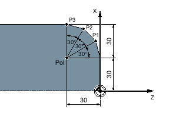

Positionen können Sie durch rechtwinklige Koordinaten oder durch Polarkoordinaten angeben.
Ist ein Punkt in einer Werkstückzeichnung durch einen Wert für jede Koordinatenachse bestimmt, können Sie die Position leicht durch rechtwinklige Koordinaten in die Parametermaske eintragen. Bei Werkstücken, die mit Kreisbögen oder Winkelangaben bemaßt sind, ist es oft einfacher, wenn Sie die Positionen mit Polarkoordinaten eingeben.
Polarkoordinaten können Sie nur bei den Funktionen "Gerade Kreis" und "Konturfräsen" programmieren.
Der Punkt, von dem die Bemaßung in Polarkoordinaten ausgeht, heißt "Pol".
Polarkoordinaten
Die Positionsangaben für den Pol und die Punkte P1 bis P3 in Polarkoordinaten lauten:
Pol: X30 Z30 (bezogen auf den Nullpunkt)
P1: L30 α30° (bezogen auf den Pol)
P2: L30 α60° (bezogen auf den Pol)
P3: L30 α90° (bezogen auf den Pol)